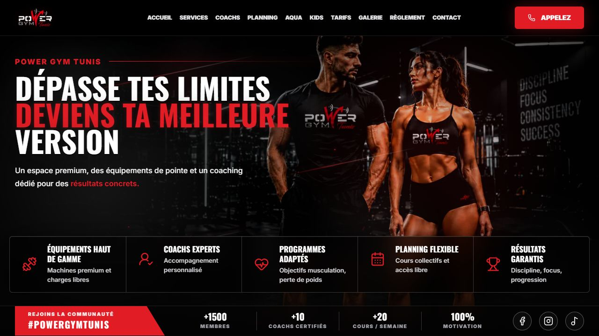
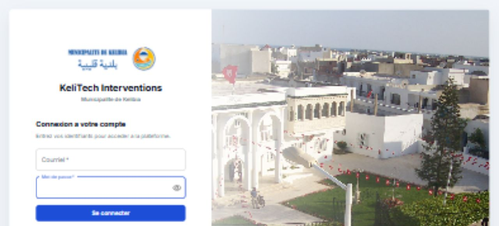
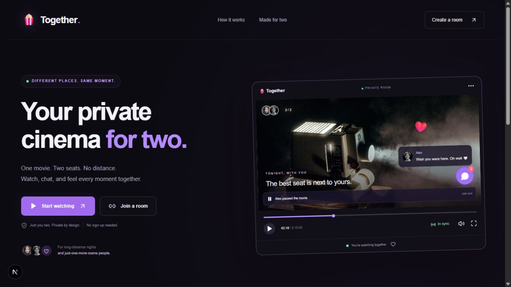
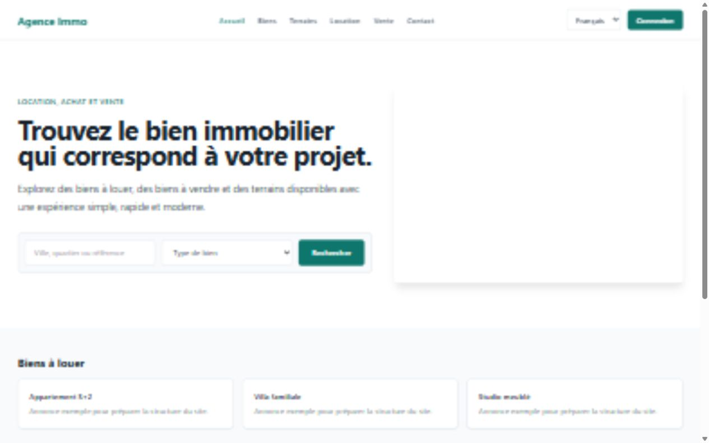
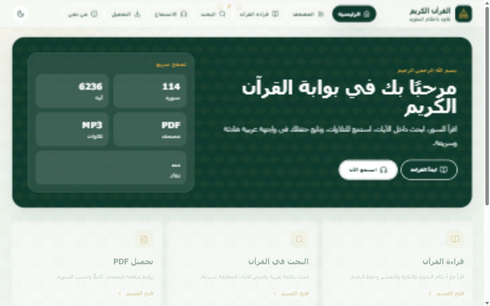
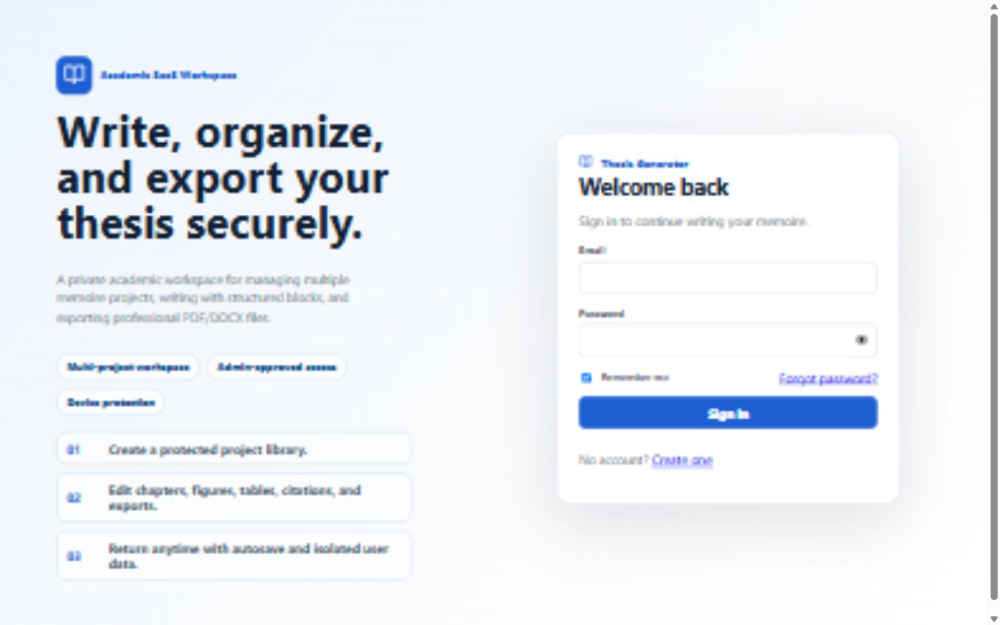

Tests & assurance qualité
Vérifier les fonctionnalités, repérer les anomalies et valider vos API REST. Des tests fonctionnels, de régression, d’intégration et multi-navigateurs adaptés à vos parcours.
Découvrir mon approcheDisponible pour de nouveaux projets
Je conçois des applications avec des AI Coding Agents et j’assure leur fiabilité par les tests et l’automatisation.
Services
Vérifier les fonctionnalités, repérer les anomalies et valider vos API REST. Des tests fonctionnels, de régression, d’intégration et multi-navigateurs adaptés à vos parcours.
Découvrir mon approcheCréer des tests de bout en bout avec Playwright pour vos parcours web essentiels. Des scripts maintenables, des résultats d’exécution suivis et du code versionné avec Git.
Voir mes compétencesPiloter des AI Coding Agents pour transformer un besoin métier en application : spécifications fonctionnelles, décomposition des tâches, intégration des services, revue de code et validation des parcours.
Découvrir mes projetsÀ propos de moi
Agentic Developer et QA Engineer, ingénieur logiciel certifié ISTQB CTFL v4.0. Je pilote le cycle de développement d’applications avec des AI Coding Agents : analyse des besoins, spécifications fonctionnelles, orchestration des tâches, intégration et validation des fonctionnalités.
Mes réalisations couvrent des sites vitrines, des outils métier, des applications temps réel et des espaces de rédaction. J’associe ingénierie du contexte, développement itératif et revue de code à une démarche d’assurance qualité : tests fonctionnels et de régression, validation d’API REST avec Postman et automatisation de bout en bout avec Playwright.
Kélibia, Nabeul, Tunisie
Mon portfolio
Des applications développées avec des AI Coding Agents sous ma direction : analyse du besoin, spécification des fonctionnalités, coordination des itérations, intégration et validation fonctionnelle.

Site vitrine sportif
Un site responsive pour présenter une salle de sport : activités, coachs, planning, espace aquatique, tarifs et galerie.

Gestion des interventions informatiques
Une application de suivi des interventions avec authentification, rôles utilisateur et technicien, et stockage des données via Prisma. Projet conçu pour le contexte municipal de Kélibia.

Cinéma privé synchronisé
Des salons privés pour regarder une vidéo à deux : lecture synchronisée, chat, réactions et commandes partagées, dans une interface adaptée au mobile.

Prototype immobilier
Un prototype pour explorer des biens à louer ou à vendre, rechercher par ville et type de bien, et naviguer en français, arabe ou anglais.

Lecture et écoute en arabe
Un portail du Coran avec lecture des sourates, recherche dans les versets, écoute des récitations, téléchargement PDF/MP3 et suivi de la mémorisation.

Espace de rédaction académique
Un espace multi-projets pour organiser un mémoire, rédiger des chapitres et gérer figures, tableaux et citations, avec export PDF/DOCX et interface d’administration.
Projet QA · Mars 2026 — aujourd’hui
Des exigences aux résultats de test : une approche qui associe validation manuelle et automatisation.
Compétences
Analyser les exigences, définir les scénarios et documenter les résultats. Tests fonctionnels, de régression, d’intégration et multi-navigateurs ; investigation et suivi des anomalies.
Automatiser les parcours web de bout en bout, maintenir les scripts et interpréter les résultats d’exécution. Versionner les ressources de test avec Git pour accompagner les évolutions de l’application.
Vérifier les méthodes HTTP, les codes de réponse, les données JSON et la gestion des erreurs avec Postman. Contrôler la cohérence des échanges entre l’interface et les services.
Formaliser les exigences et les critères d’acceptation, préparer le contexte technique et décomposer le travail en tâches vérifiables. Piloter les AI Coding Agents, examiner les modifications proposées, résoudre les anomalies et valider le code, les tests et la documentation à chaque itération.
Assembler interfaces, API, authentification et données. Intégrer des services Node.js / Express, Prisma, PostgreSQL ou MySQL, ainsi que des fonctions temps réel et des exports documentaires selon le projet.
TypeScript, JavaScript, Java, Git, Chrome DevTools et VS Code. React.js / Redux, HTML5, CSS3 et Tailwind CSS ; tests unitaires et travail itératif Agile / Scrum.
Formation & expérience
2020 — 2023
Diplôme d’ingénieur en technologies du web et du multimédia
2017 — 2020
Licence en technologies du web et du multimédia
Développement assisté par agents IA
Applications web & outils métier
Sept. 2024 — Fév. 2026
Freelance
Août 2023 — Août 2024
Accelerant · Sousse
Fév. 2020 — Juil. 2020
Djagora Fablab · Sfax
Certifications & formation continue
Un socle en assurance qualité, complété par des formations aux agents de développement, aux évaluations et aux protocoles de contexte.
Assurance qualité
Certified Tester Foundation Level
AI Coding Agents
Prise en main des agents de développement et de leur environnement de travail.
AI Coding Agents
Mise en pratique des workflows de développement assisté par agents IA.
Évaluation des systèmes IA
Introduction aux méthodes d’évaluation des sorties et des comportements des systèmes IA.
Intégration & contexte
Introduction au protocole MCP pour connecter les applications IA à des outils et des sources de contexte.
Agents & orchestration
Fondamentaux des agents IA et de l’organisation de workflows agentiques.
Me contacter
Une application à développer, des tests à automatiser ou une solution à fiabiliser ? Décrivez votre besoin et échangeons sur la suite.
Kélibia, Nabeul, Tunisie